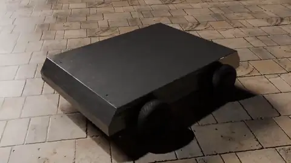
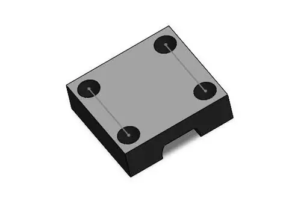
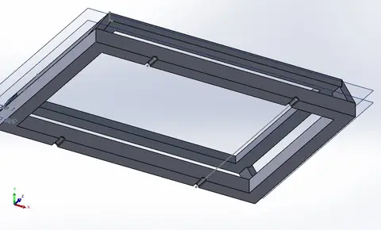
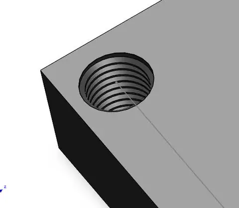
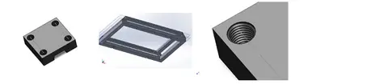

Freelance 3D modeling of a vehicle chassis and its mechanical parts.
Motivation
A chassis design needs a clear model of its frame and component geometry before the design can be reviewed.
Implementation and scope
- Modeled the chassis frame and individual mechanical parts in 3D CAD.
- Prepared renders and an animation to show the design.
Outputs
- Produced a set of chassis design models and visualizations for freelance work.
Photos and videos
Gallery
Chassis Modeling

Chassis Modeling

Chassis Modeling

Chassis Modeling

Chassis Modeling